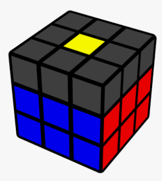

Cross
The first step in solving a cube using the CFOP method is solving the cross. An image of the cross is below:

The cross is, for the most part, intuitive. That is to say that unlike the other three stages of CFOP, it does not require memorizing any algorithms. However, the lack of algorithms means that you the speedcuber must do the thinking yourself to get a cross solved, and over time, practicing this builds the required intuition.
F2L (First 2 Layers)
Summary
Unlike the more novice "Layer by Layer" method which involves the 3x3 speedcube's three layers in three separate steps, CFOP compresses the first two layers into one step after the cross. The end product after F2L can be seen below:

Unlike the cross, F2L is not intuitive in the sense that it requires algorithms. Fear not! "Beginner" approaches to F2L include only a handful of algorithms that apply to a variety of cases with a bit of intuition.
As a general rule, the further out one is in one's CFOP journey, the less "intuitive" or "self-explanatory" algorithms tend to be.
Resources
F2L does not have to be hard if one progresses slowly and steadily. As such, the following resources have been ordered in terms of difficulty and recommended progression.
- Here is a video tutorial for "intuitive F2L" by the YouTuber JPerm.
- JPerm has also made a video for advanced F2L, however one is not advised to start from here if one is not fluent with "intuitive" or "beginner" F2L.
- SpeedSolving Wiki has a nice list of resources for F2L algorithms. This is like a bulk "resource dump".
OLL (Orienting the Last Layer)
Summary
i should add stuff here but like its getting repetitive so ill leave it for a later time
Resources
Here is some stuff for the purposes of making a skeleton:
- Object 1
- Object 2
- Object 3
PLL (Permutating the Last Layer)
Summary
i should add stuff here but like its getting repetitive so ill leave it for a later time
Resources
Here is some stuff for the purposes of making a skeleton:
- Object 1
- Object 2
- Object 3